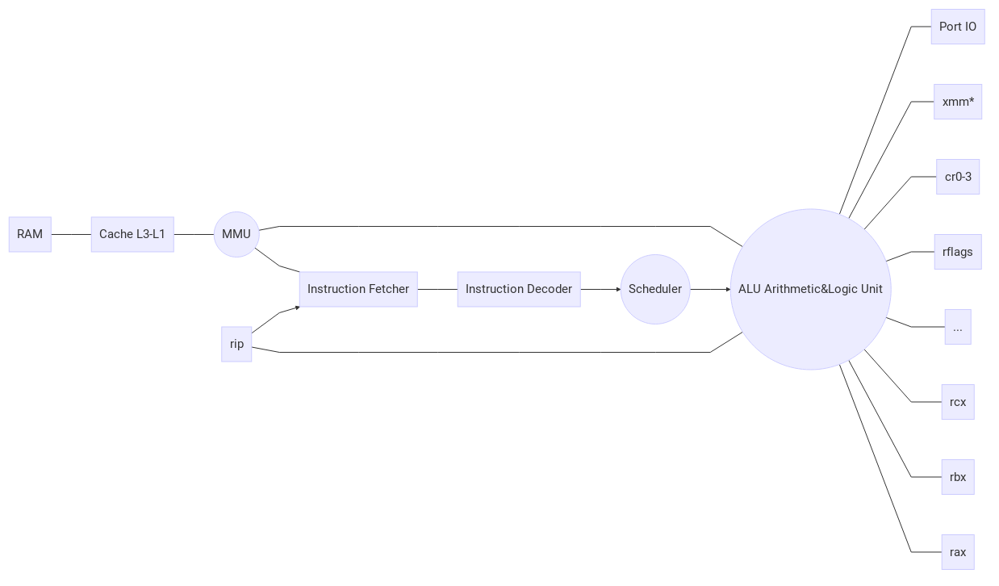

Architektura procesora¶
- Istnieje wiele architektur procesorów, obecnie najczęściej występujące to:
- Intel x86 (32-bitowe, wywodzące się z procesora Intel 8086)
- AMD64 (64-bitowe, rozszerzenie architektury x86) - Intel posiada prawie identyczną EM64T
- POWER (w starszych Macach PowerPC, obecnie używana głównie na komputerach typu mainframe)
- ARM (32- i 64-bitowy wariant, wszechobecny w smartfonach, tabletach, a od niedawna też niektórych laptopach)
Każda z nich charakteryzuje się innym zestawem dostępnych operacji, sposobem kodowania instrukcji, kompatybilnymi podzespołami bazowymi, zabezpieczeniami programów działających w userspace (o tym za chwilę), zwykle też producentem i patentami. Podczas naszych warsztatów zajmiemy się programami napisanymi pod architektury Intel x86 i AMD64, ponieważ występują one najczęściej na komputerach osobistych i serwerach, są do siebie bardzo podobne i mamy z nimi do czynienia na co dzień.
Schemat blokowy „elementów” procesora¶
- Opis:
- Random Access Memory - pamięć o dowolnym dostępie - zwykle GiB
- Cache poziomu 1, 2[, 3] - pamięc podręczna procesora, pośredniczy w dostępie do RAMu, przyspieszając go - zwykle MiB
- Memory Management Unit - układ zarządzania pamięcią - przekierowuje dostępy do pamięci do odpowiednich adresów pamięci fizycznej (RAM lub innych urządzeń)
- Instruction Fetcher - pobiera kolejne instrukcje z pamięci
- Instruction Decoder - dekoduje instrukcje do mikrokodu - uproszczonego zestawu instrukcji, faktycznie wykonywanych przez CPU
- Scheduler - może zmieniać kolejność instrukcji, opóźniać ich wykonanie, „zlecać” pobranie danych z pamięci - aby jak najlepiej wykorzystać układy dostępne w procesorze
- Arithmetic and Logic Unit - wykonuje obliczenia i operacje logiczne na danych z rejestrów i pamięci
- Rejestry podstawowe (rax, rbx, …, r8, …, r16) - program może wykorzystywać je dowolnie do obliczeń, przekazywania i przechowywania danych
- Rejestry wektorowe (xmm*) - służą do obsługiwania instrukcji SIMD (Single Instruction Multiple Data), znajdujących się w rozszerzeniach architektury takich jak SSE, AVX
- Rejestry sterujące (cr0-cr3) - program nie ma do nich dostępu, system operacyjny może nimi włączać/wyłączać różne funkcje procesora oraz sterować m.in. MMU
- Rejestry stosu (rsp, rbp) - zawierają lokalizację stosu w pamięci, procesor używa ich przy wielu instrukcjach
- Rejestr rip - instruction pointer - zawiera lokalizację aktualnie wykonywanej instrukcji w programie, nie ma do niego bezpośredniego dostępu,
trzeba używać specjalnych instrukcji, takich jak
call,jmp
Pamięć wirtualna¶

Źródło: Wiki OSDev <http://wiki.osdev.org/File:Virtual_memory.png>
Programy zwykle nie otrzymują bezpośredniego dostępu do RAMu i urządzeń podłączonych do procesora. Zamiast tego komunikacja następuje przez pamięć wirtualną, którą przydziela i zarządza system operacyjny.
W architekturze x86 są dostępne 4 GiB pamięci wirtualnej (32-bitowe adresowanie), a w AMD64 co najmniej 256 TiB (48-bitowe adresowanie, ale pojedyncze modele procesorów mogą wspierać aż do 64 bitów). Pamięć ta jest podzielona na 4KiB-, 2MiB-, albo 1GiB- (system może wybrać różny rozmiar dla różnych obszarów pamięci) niepodzielne „strony”, każda z nich może być przypisana do danego adresu pamięci fizycznej, ograniczona pod względem odczytu lub zapisu, lub ustawiona jako „pułapka”.
Taka pułapka w momencie próby dostępu do niej przerywa wykonywanie programu, pozwalając systemowi operacyjnemu na podjęcie działania,
np. wczytanie danych do pamięci z dysku, zapisując na dysk inną stronę pamięci (swapping), co pozwala na uzyskanie dostępu do większej ilości
pamięci niż jest dostępna w RAMie. Innym możliwym rozwiązaniem jest uznanie takiego dostępu jako błąd, wtedy na systemach *nix wysyłany jest sygnał
SIGSEGV (segmentation fault), a na Windowsie błąd 0xc0000005.
Ciekawostka: to, że „nie wolno” zrobić dereferencji wskaźnika null, jest zaimplementowane właśnie za pomocą nie ustatwiania pierwszej strony
pamięci wirtualnej jako dostępnej dla programów, ale np. na Linuxie za pomocą funkcji mmap da się uzyskać dostęp do adresu 0x0.
Stos i sterta¶
Pisząc programy często korzystamy ze „stosu” i „sterty”. Są to dwa obszary pamięci, do których dostęp daje większość bibliotek standardowych języków programowania. Sterta to zwykle obszar znajdujący się tuż za danymi i kodem programu w pamięci wirtualnej, dlatego może być rozszerzana praktycznie bez ograniczeń. Natomiast stos „rośnie w dół” - jego podstawę umieszcza się w pewnym adresie w pamięci i każda kolejna dana na nim umieszczona zmniejsza adres jego góry, aż do osiągnięcia limitu, który najdalej może być tuż za kodem aplikacji.
Trzymanie danych na stosie umożliwia zwykle szybszy do nich dostęp, ponieważ jest większe prawdopodobieństwo, że są one trzymane w pamięci podręcznej procesora. Pobranie 64 bajtów danych z RAMu do pamięci podrzęcznej na obecnych procesorach zajmuje zwykle około 200-300 cykli, podczas gdy dodawanie około 1 cyklu!
Jeżeli stos nie jest właściwie zabezpieczony, odniesienie się w nim odpowiednio „daleko” da dostęp do danych programu, co będzie jedną z metod PWNingu, którą pokażemy na warsztatach.
Pierścienie ochrony¶
Jak procesor odróżnia system operacyjny od programów? Do tego służą właśnie 4 (czasami 5) „pierścieni” - określających uprawnienia wykonywanego kodu.
- Pierścień 0 - gdy procesor się włącza i wczytuje kod, pracuje w R0 (Ring 0) - jest to także ten pierścien, w którym pracuje system operacyjny
- Pierścienie 1, 2 - zwykle nie są używane, niektóre systemy (np. OS/2) używały ich dla sterowników
- Pierścień 3 - najbardziej ograniczony, nie może zarządzać pamięcią wirtualną ani wejściem/wyjściem, nie ma dostępu do stron „chronionych” To w nim właśnie działają programy użytkowników.
- Pierścien -1 - ma jeszcze większe uprawnienia niż R0, jest używany przy technologiach wirtualizacji, aby kontrolować maszyny wirtualne przyspieszone sprzętowo
Jak przechodzi się między pierścieniami? Z R0 do R3 system może wykonać specjalną instrukcję skoku, która zmieni aktualny pierścień. Natomiast aby wrócić z programu do poziomu systemu jest kilka opcji:
- Poczekać na przerwanie(interrupt) - urządzenia zewnętrzne, np. zegar systemowy, mogą generować przerwania, które są obsługiwane w R0
- Wywołać przerwanie programowe - instrukcją
intmożna zasymulować przerwanie, tak w architekturze x86 programy komunikują się z jądrem systemu operacyjnego- Użyć specjalnej instrukcji - w architekturze AMD64 wprowadzono instrukcję
syscall, która pozwala na znacznie szybsze przejście do R0 i spowrotem niż przerwania programowe
Podstawowe operacje logiczne, arytmetyczne i powiązane¶
Podstawowa składnia asm:
; To jest komentarz
mov eax, 7 ; ustaw eax na 7
mov eax, ebx ; ustaw eax na wartość ebx
mov eax, [8] ; ustaw eax na wartość z pamięci pod adresem z 8
mov eax, [ebx] ; ustaw ebx na wartość z pamięci pod adresem odczytanym z ebx
mov eax, [ebx + ecx*4 + 128] ; ustaw eax na wartość z pamięci pod adresem
; obliczonym z wyrażenia [...] (wyrażenia są bardzo ograniczone)
mov CEL, ŹRÓDŁO- skopiuj wartość ze źródła do celu (mogą być to rejestry, lokalizacje w pamięci lub konkretne wartościadd CEL, ŹRÓDŁO- dodaje źródło do celusub CEL, ŹRÓDŁO- odejmuje źródło od celushl/shr CEL, ŹRÓDŁO- wykonuje przesunięcie bitowe w lewo/prawo na celu o źródło bitówxchg A, B- zamienia A z B (muszą być to rejestry bądź rejestr i miejsce w pamięci)lea CEL, ADRES- ADRES podaje się jak miejsce w pamięci, ale jest ono obliczane i zapisywane do celu tak jak robi tomovmul B- mnoży (unsigned) rax przez B, zapisuje wynik do rdx(wyższe bity) i rax(niższe bity)imul B- tak jak mul, ale wykonuje mnożenie ze znakiem (signed)imul CEL, ŹRÓDŁO- mnoży cel przez źródło, zapisuje wynik do celuimul CEL, A, B- mnoży A przez B i zapisuje do celudiv B- dzieli(unsigned) rdx:rax przez B, zapisuje część całkowitą do rdx, a resztę do eaxidiv B- tak jak div, ale dzieli ze znakiem (signed)neg A- wykonuje negację A, zgodnie z metodą 2’s complement (A <- ~A + 1)cdq- Convert dword to qword - rozszerza znak rax do rdxinc A- zwiększa A o 1dec A- zmniejsza A o 1and/or/xor CEL, ŹRÓDŁO- wykonuje odpowiednią operację logiczną i zapisuje wynik do celunot A- neguje wszystkie bity A
push A- odkłada wartość/rejestr A na stospop A- zdejmuje wartość ze stosu i zapisuje do Apushf- odkłada flagi procesora na stosiepopf- zdejmuje flagi procesora ze stosu
nop- nic nie robi :Dnaz.wa:- etykieta, oznacza adres kolejnej instrukcji; jeżeli zaczyna się kropką, to jest lokalna dla nadrzędnej etykietyjmp ADRES- wykonuje skok do adresu (ustawia rip na adres)call ADRES- odkłada adres następnej instrukcji na stos, a następnie skacze do adresu (jak wywołanie funkcji)ret- zdejmuje adres ze stosu i do niego skacze (jak powrót z funkcji)int BAJT- wywołuje przerwanie programowe o podanym numerze (1-bajtowym)- (tylko 64-bitowe)
syscall- obsługuje syscall zgodnie z interfejsem systemu operacyjnego
test A, B- wykonuje and bitowy na A i B, flaga znaku jest ustawiana na najbardziej znaczący bit, zera jeżeli wynik jest zerem, parzystości, gdy wynik ma parzystą liczbę jedynekcmp A, B- porównuje A z B i ustawia odpowiednie flagije/jz ADRES- skacze gdy ZF=1 (cmp: A==B)jne/jnz ADRES- skacze gdy ZF=0 (cmp: A!=B)jg ADRES- skacze gdy SF=OF;ZF=0 (cmp: A>B)jge ADRES- skacze gdy SF=OF;ZF=1 (cmp: A>=B)ja ADRES- tak jak jg, ale porównanie bez znakujae ADRES- tak jak jge, ale porównanie bez znakujl ADRES- skacze gdy SF!=OF (cmp: A>B)jle ADRES- skacze gdy SF!=OF lub ZF=1 (cmp: A>=B)jb(e) ADRES- są dla jl i jle tak jak ja i jae dla jg i jgejo ADRES- skacze gdy OF=1 (overflow flag)jno ADRES- skacze gdy OF=0 (overflow flag)js ADRES- skacze gdy SF=1 (sign flag)jns ADRES- skacze gdy SF=0 (sign flag)loop ADRES- zmniejsza rcx o 1, skacze jeżeli rcx jest jeszcze większe od 0loop(e/ne/z/nz)- jeżeli warunek jest spełniony to działa tak jak loop, jeżeli nie to jest pomijana